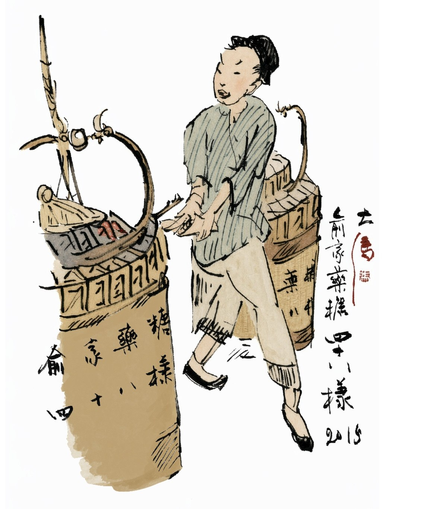
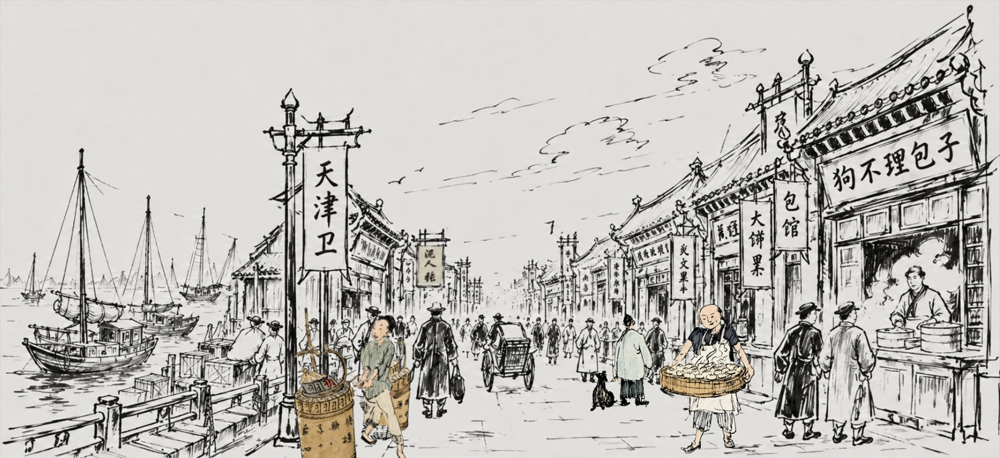
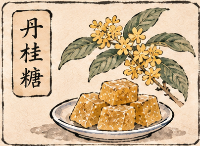
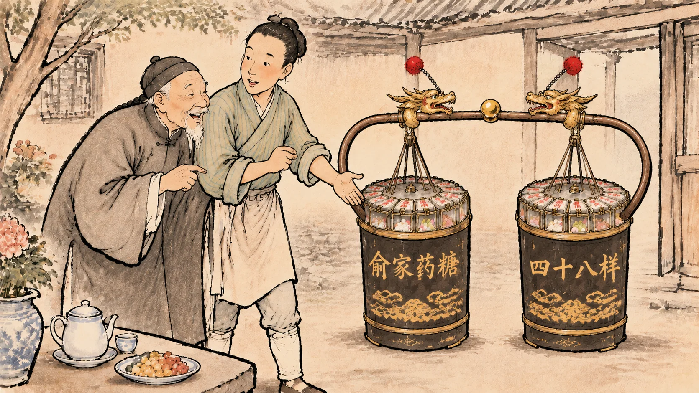

人物小记
俞六 先把糖做讲究，再把路走出来
俞六做得出四十八种颜色、味道各异的药糖，却不善吆喝。挑担里的每只糖盒、每把铜勺，都先替他把“讲究”两个字说了出来。
依据《四十八样》设计方案中的人物线与道具描述整理，不作为原著引文。

第一折 · 街口初见
晨雾未散，海河边的街市先醒了。俞六守着一副挑担，糖香有了，名气还在路上。
场景一 · 天津老街
在画面上横向拖动或移动鼠标，可看见轻微前后景层次；轻触朱印即可翻看札记。


清末民初 海河沿岸的天津老街
点朱印，辨人、看器、识街
人物小记
俞六做得出四十八种颜色、味道各异的药糖，却不善吆喝。挑担里的每只糖盒、每把铜勺，都先替他把“讲究”两个字说了出来。
依据《四十八样》设计方案中的人物线与道具描述整理，不作为原著引文。

街口未响的吆喝
俞六不是没本事。四十八样药糖摆得齐整，颜色、味道各有讲究；难的是，他守在家门口， 不会吆喝，也就不容易让街坊停下来。
“一担四十八样，挑出天津卫的绝活与智慧。” 项目主题语
本阶段图录
四张素材用于统一人物、街坊与器物造型；双桶挑担已按图样拆成五步，移入下方向读者开放。
第一章 · 药糖图鉴
四十八样先从十二格看起。点一只糖盒，库房会替你记下它；十二样识全，再看双桶如何成担。

纸包药糖
本柜所见
金桂入糖，甜里透香
桂花细，糖体温。丹桂糖不靠浓甜压人，嚼开了才有花香浮上来，是柜里很讲火候的一味。
糖品说明依据素材图录与民间食养说法整理，不是医疗建议，也不补写原著情节。
第三章 · 挑担装配
把两个桶柜放上地面基准线，其余零件可自由摆放、随时调整；自动装配仍可作为参考。
《四十八样》· 交互二
左侧只留院落背景，先把两个桶柜放稳在地面基准线上。
第四章 · 走八字
从高处看俞六怎样绕着双桶取糖。顺着高亮按钮走完左右两圈，人物姿态、桶身和路线都会给出回应。
两手扶稳，先从左圈起势。
第四章互动完成 · 街坊喝彩
“好！这才叫绝活！” 交互辅助反馈，非原著原话
左圈取糖，交叉换手，右圈回身。桶柜、铜勺和脚步合成了一套旁人一眼能认出的把式。 接下来把天津六句词踩进这套步法，并逐句接上天津话录音。
第五章 · 绝活被模仿
双桶和走八字被人在街口学了去。先看清局面，再听刘二爷点一句； 你的选择只决定先翻哪页，故事仍按俞六真正变法的顺序向前。
双桶、龙头和八字路线，街口已经有人照着学。

三改收束 · 仍是原著方向
糖要做得全，担子要做得巧，买卖里还要有人情；再把天津话踩进步子里， 旁人即便学去外形，也学不走俞六一层一层琢磨出来的门道。
第六章已接入天津话逐句语音；篇末已接入结尾原文与读后感悟， 八天送糖图鉴仍待接入。
第六章 · 天津六句词
点击已经解锁的词句播放天津话录音；每句播放完成后才开放下一句。 录音缺失时只保留文字阅读，不播放合成语音。
六句词踩进八字的步子里，街坊先笑，随后齐声叫好。 交互辅助反馈，非原著原话
俞六站稳担子，先等第一句起声。
按本轮《四十八样》附件中的六句词录入。此处只做逐句阅读与动作联动， 不改写后续故事。
第六章互动完成 · 六句落定
街坊先笑，随后齐声叫好。六句词把俞六的担子、步子与天津人的幽默 连成一体，故事仍沿原著方向向前。
尾声 · 已接入七章阅读框架
天津六句词已接入逐句方言录音、人物步伐与街坊反馈。 故事结尾沿用现有原文阅读，八天送糖图鉴仍保留待接入入口。